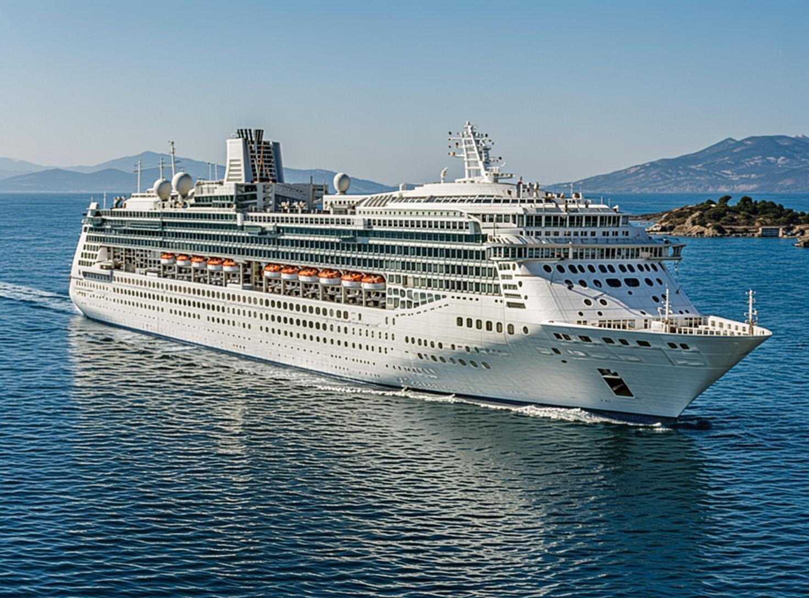
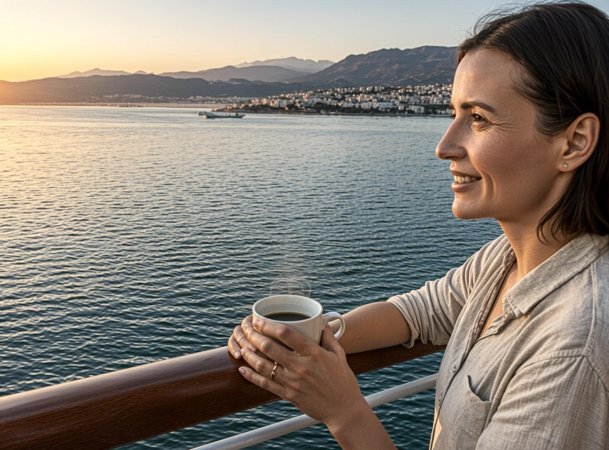
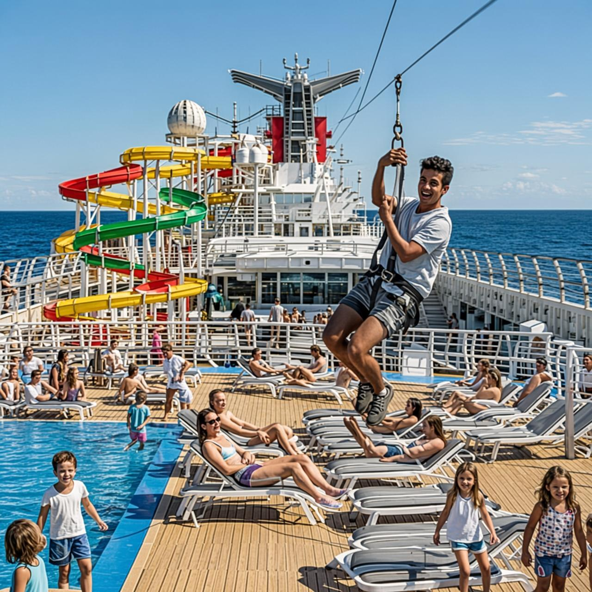
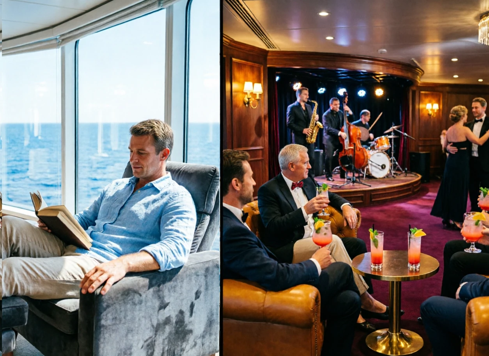
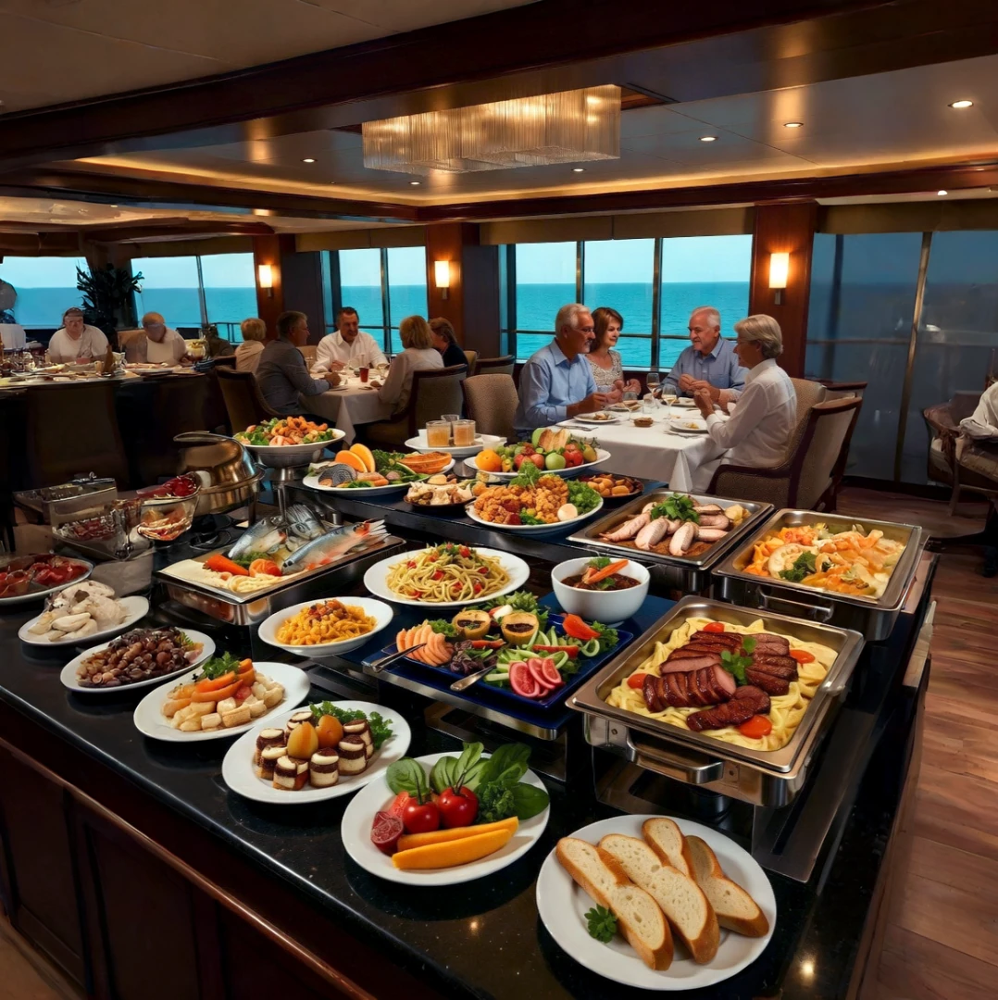

Take a Luxury Cruise

The Ultimate Getaway
A luxury cruise is the ultimate getaway vacation. It offers a rare chance to truly unplug from the fast pace of daily life. In today's world, planning a traditional holiday means booking flights, hunting for hotels, and coordinating luggage transfers, and it can often feel as draining as work itself. This is precisely why nearly 40 million people worldwide choose a cruise vacation every year. A modern cruise ship is far more than just a boat; it is a floating, sophisticated resort.
The Magic of Moving Without Moving

One of the greatest joys of a cruise is the total lack of travel hassles. Imagine going to sleep in one country and waking up in another, all without the trouble of moving your suitcases from hotel to hotel. Whether you are sailing through the sunny Caribbean, exploring historic Mediterranean ports, or venturing to the Alaskan wilderness, your ship acts as your moving cabin. You can step outside, breathe in the fresh ocean air, and watch the horizon change while the chaotic world fades away. There are no airport lines, no train schedules, and no rental car worries — just pure relaxation as the ship handles all the logistics. For those who wish to explore ashore, the cruise line offers a wide selection of guided excursions — city tours, camel rides, and mountain hikes — ensuring you get the most out of every port of call.
Adventure for the Whole Family

The modern cruise experience is defined by personal flexibility and incredible variety. You can customize each day to match your exact mood. For adventure seekers, many ships feature high-tech waterslides, zip lines, rock-climbing walls, and virtual reality gaming arenas. Families especially appreciate the supervised kids' clubs, which give parents some well-deserved time to themselves.
Quiet Corners and Lively Nights

For those who prefer peace and quiet, adult-only lounges, luxurious spas offering massages, and serene library spaces provide the perfect environment to relax. You can enjoy mocktails by the pool while reading a book with an ocean view, or unwind in an observation lounge and simply watch the water go by. When the sun goes down, the entertainment becomes just as diverse. You can watch Broadway-style theater performances, enjoy live music, or dance the night away at a nightclub. For a touch of excitement, onboard casinos offer games like blackjack and roulette, adding a Las Vegas-style thrill to your evening.
Dining and Togetherness

Dining is one of the best parts of a cruise. You can eat delicious food all day long — breakfast, lunch, dinner, and snacks at any time. Big buffets offer endless choices, including pasta, fresh fish, burgers, and decadent desserts, while sit-down lunches and dinners showcase a variety of international cuisines. Cruising offers a unique balance: it gives families a chance to bond through shared experiences, while allowing individuals the freedom to pursue their own interests. This flexibility is what makes the experience so appealing to such a wide range of travelers.